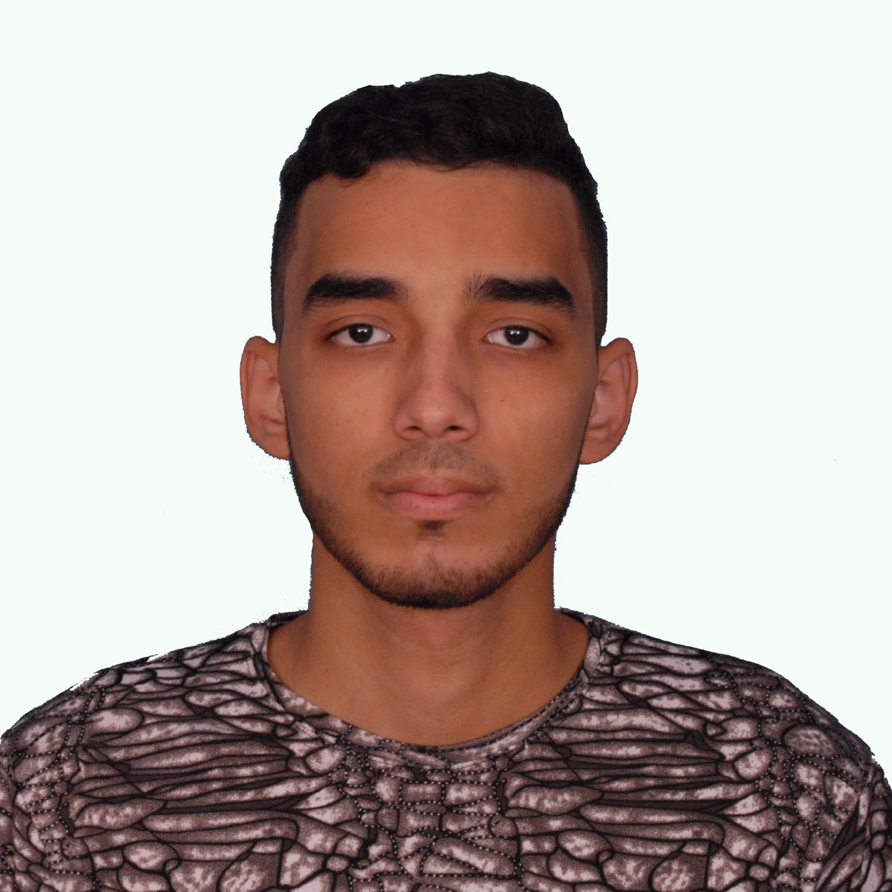

ZAKRI MOSTAFA

Summary
I am an Aspiring web Developer, I have obtained my diploma as a Specialist Technician in Computer Development.
Additionally, I hold a diploma in Law and have work experience in conducting surveys.
This experience has enabled me to engage with various types of people and effectively manage diverse interactions.
Through my diverse experiences, I have strengthened my skills and acquired a wide range of knowledge.
I am here to further enhance my skills and.
Education
- High School Diploma in Physical Sciences
Mohammed Nassiri High School,
Casablanca, Morocco
- Specialist Technician Diploma in Computer Development"+2years after high school"
From 2017 to 2019 at ISTA-Hay Hassani 1
Casablanca, Morocco
- Bachelor's Degree(+3 years after high school) in Private Law Arabic Option
In July 2023 at Hassan II University, FSJES AIN CHOCK
Casablanca, Morocco
Work Experience
-
Intern Computer Maintenance Technician, SomaSteel, Casablanca
April 2019 - May 2019
- Installed, configured, and upgraded computer platforms and installations.
- Diagnosed and rectified hardware incidents.
- Provided user support
-
Mapping Agent, High Commission for Planning, Negach, Casablanca
March 2023 to May 2024
Data Collector
- Conduct physical surveys and Data Recording
- Data Processing, Management and Quality Control
- Public Interaction and Troubleshooting
Team Leader
- Leadership, Motivation and Expectation Management
- Problem-Solving and Resource Management
- Planning, Organization and Team Building
Skills
- Microsoft Office
- Organization
- Flexibility
- Proficiency in Adobe Photoshop
- Effective Communication
- Languages
- Arabic: Native Language
- English: Advanced
- French: intermediate
Other